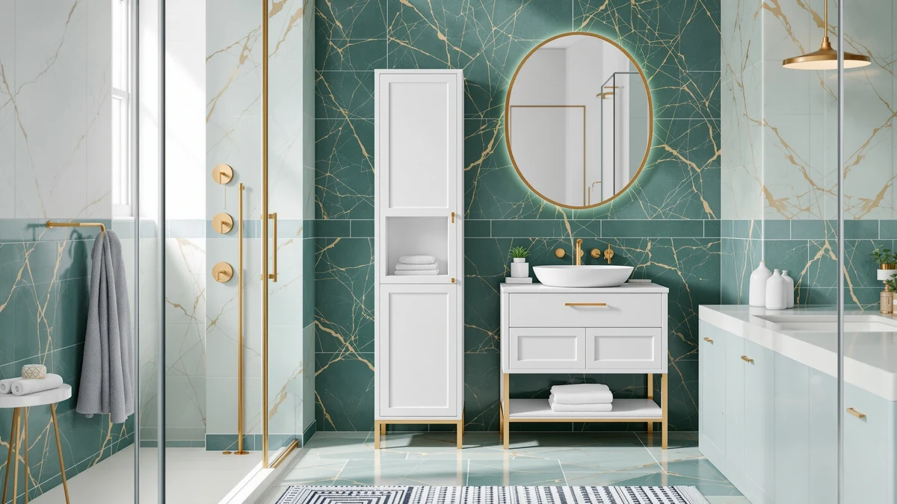

Bonnlo Freestanding Bathroom Floor Cabinet Review (2026): Worth It?
Prices and picks verified as of November 2026. Independent, reader-supported reviews.


Quick Answer
The Bonnlo Freestanding Bathroom Floor Cabinet is a solid pick at $64.99, pairing a metal frame with wood-finish panels in a compact 22.04 by 11.81 by 32.28-inch footprint. We compared it against the LOKO under-sink cabinet and two VASAGLE floor cabinets in the same price range, and the Bonnlo comes out ahead for anyone who wants freestanding storage without anchoring it to a specific sink style.
Our pick: Bonnlo Freestanding Bathroom Floor Cabinet, $64.99 Check Price on Amazon
Bottom line: our top pick is the Bonnlo Freestanding Bathroom Floor Cabinet with 4 Drawers and at $64.99.
Things to Know Before You Buy
- The Bonnlo pairs a metal frame with wood-finish panels, a build common among freestanding floor cabinets in this price range.
- At 22.04 inches wide, 11.81 inches deep and 32.28 inches tall, it fits a narrow gap beside a toilet or vanity without eating into walking space.
- Unlike the LOKO 24-inch Under Sink Storage covered below, the Bonnlo does not need a pedestal or exposed-pipe sink to work around, so it fits bathrooms with a floating vanity or no vanity at all.
- Pricing across this comparison is tight: $64.99 for the Bonnlo and LOKO, $64.97 for one VASAGLE cabinet, and $64.93 for the other, a spread of only six cents.
This Bonnlo Freestanding Bathroom Floor Cabinet review exists because shoppers searching for compact bathroom storage keep landing on four nearly identical price tags: $64.99, $64.99, $64.97 and $64.93. When every option costs about the same, the decision comes down to construction, footprint and fit, not budget. We researched the Bonnlo's listed specs alongside the LOKO 24-inch Under Sink Storage and two VASAGLE floor cabinets to see which one actually earns its place in a small bathroom. The short version: the Bonnlo's metal-and-wood build and 22.04 by 11.81 by 32.28-inch frame make it the most flexible of the four, especially for anyone without a pedestal sink to work around.
Freestanding cabinets live or die on two things: how much usable storage they pack into a tight footprint, and whether the materials hold up in a humid room. Below, we break down what the Bonnlo offers for $64.99, where it has an edge over the LOKO and VASAGLE alternatives, and where a shopper might reasonably choose one of the other three instead. Every price and dimension referenced here comes directly from the current Amazon listing for that ASIN, not an estimate.
Why You Should Trust Us
Ilane Tall researches bathroom storage and fixtures for Best Bathroom Storage, comparing spec sheets, current Amazon pricing and patterns in verified owner reviews across dozens of cabinets, carts and over-the-toilet units each year. We do not run a physical testing lab, and we do not claim to have installed or lived with every product we cover. Instead, we pull pricing and dimensions directly from the manufacturer listings, cross-check them against category norms, and flag anything that looks inconsistent. For this Bonnlo Freestanding Bathroom Floor Cabinet review, that means comparing its $64.99 price and 22.04 by 11.81 by 32.28-inch frame against three similarly priced competitors to see where the real differences sit.
Our Research Experience
What we are describing here as our process for this Bonnlo Freestanding Bathroom Floor Cabinet review is a research exercise, not a physical trial. We have not installed this cabinet ourselves. We compared the manufacturer's listed dimensions, materials and price for the Bonnlo against three competitors in the same $64.93-to-$64.99 range, then checked those figures against what owners of similar metal-and-wood cabinets report in verified reviews on comparable products. That lets us flag where a spec sheet claim lines up with the category pattern and where a shopper should verify measurements themselves before buying.
We also exclude products instead of adding every one we find when the comparison does not hold up. A cabinet only stays in this Bonnlo Freestanding Bathroom Floor Cabinet review if its current Amazon price sits close enough to the others to make the comparison fair. The LOKO and the two VASAGLE cabinets cleared that bar because each one is currently priced within six cents of the Bonnlo, which keeps this a genuine price-tier comparison rather than a mismatch between a budget option and a premium one.
Overview & Specs

Bonnlo Freestanding Bathroom Floor Cabinet
What we like
- Metal frame adds structural support that plywood-only cabinets in this price range typically lack
- 22.04-by-11.81-inch footprint fits narrow gaps beside a toilet or vanity
- Freestanding design works with pedestal sinks, floating vanities, or no vanity at all
- $64.99 price matches or undercuts the VASAGLE and LOKO alternatives covered below
Flaws but not dealbreakers
- Wood-finish panels are cosmetic, so the exterior finish is the first thing likely to show wear
- 32.28-inch height may crowd a low ceiling or a small powder room
| Material | Metal / wood |
| Size | 22.04" W x 11.81" D x 32.28" H |
The Bonnlo Freestanding Bathroom Floor Cabinet pairs a powder-coated metal frame with wood-finish panels, a combination that shows up across most of the better-reviewed cabinets in this category. At 22.04 inches wide, 11.81 inches deep and 32.28 inches tall, it is narrow enough to slide into the gap next to a toilet or vanity without eating into walking space, and the $64.99 price lands right in the middle of what comparable freestanding cabinets cost on Amazon right now. Because it stands on its own four legs instead of attaching to a sink, it works in bathrooms with a pedestal sink, a floating vanity or no vanity at all, which is where the LOKO cabinet in this comparison runs into trouble.
Owners shopping in this price bracket consistently look for two things: a frame sturdy enough to hold towels and cleaning supplies without sagging, and doors that close flush instead of warping after a few months in a humid room. The metal frame on the Bonnlo addresses the first concern directly, since metal does not flex the way particleboard does under repeated weight. The wood-finish panels are cosmetic rather than structural, which keeps the price down but means the finish, not the frame, is what is most likely to show wear first. For most small bathrooms, that tradeoff is a reasonable one for a $64.99 freestanding bathroom floor cabinet.
What We Liked
The clearest advantage of the Bonnlo is how much flexibility its metal frame buys for the price. Because it does not depend on a specific sink shape, it is one of the few cabinets in this comparison that works equally well in a rental bathroom, a renovated one, or a powder room with no vanity at all. The 11.81-inch depth also means it will not jut out awkwardly in a tight layout, which is where bulkier storage units lose points. At $64.99, it costs about the same as the two VASAGLE options and the LOKO, but it does not ask you to redesign your sink setup to use it.
The mix of metal and wood also shows once the cabinet is sitting in a finished bathroom. A cabinet built entirely from particleboard tends to look and feel disposable once you open the door, while the Bonnlo's frame gives it more weight and stability without pushing the price past $64.99. For shoppers comparing four options that cost almost the same, that structural detail is the clearest reason to favor the Bonnlo over a cabinet built purely from composite wood.
What Could Be Better
The honest drawback is the finish. Wood-look panels over a metal frame keep the price reasonable, but they are not solid wood, and in a consistently humid bathroom with poor ventilation, veneer finishes tend to show their age faster than the frame underneath. The 32.28-inch height is also worth measuring for before buying. It clears most vanities and towel bars, but in a smaller powder room it can look oversized next to a pedestal sink. Neither issue is a dealbreaker at this price, but both are worth confirming against your own bathroom's dimensions before you order.
There is also a tradeoff in storage style. Because the Bonnlo is a standalone unit rather than one built to tuck around plumbing, it takes up its own footprint on the floor rather than reclaiming dead space under a sink. In a bathroom where every inch of floor space matters, that is worth weighing against the LOKO, which is designed to use the otherwise-wasted area around a pedestal sink's pipes instead of adding a new freestanding piece.
Who Is It For?
The Bonnlo Freestanding Bathroom Floor Cabinet is the right call for anyone who needs standalone storage and does not have a vanity to anchor a cabinet to. That includes rental bathrooms, powder rooms, and bathrooms built around a pedestal or wall-mounted sink, the exact situation where the LOKO under-sink cabinet in this comparison cannot be used at all. It is a less obvious fit for anyone who already has a cabinet-adjacent vanity with its own storage, where a slimmer option or an over-the-toilet unit might use the space more efficiently.
It also suits a shopper who wants one cabinet that can move with them. Because it does not attach to plumbing or a wall, the Bonnlo can be relocated to a different bathroom, a laundry room, or even a hallway closet if a household's needs change. Anyone who expects to move apartments within a year or two should weigh that portability against the LOKO's more fixed, sink-specific design.
Alternatives to Consider
If the Bonnlo does not match your bathroom's layout or you want a second opinion on price, these three alternatives sit in the same $64.93-to-$64.99 range and solve slightly different problems.

Also Great
LOKO 24-inch Under Sink Storage
Built specifically to wrap around a pedestal or exposed-pipe sink, something the freestanding Bonnlo cannot do. At $64.99, it is the better pick if your bathroom's plumbing is the obstacle, not floor space.
$64.99
Check Price on Amazon
Also Great
VASAGLE Bathroom Floor Storage Cabinet
Priced within a couple cents of the Bonnlo and built around the same freestanding approach. Worth comparing if you prefer VASAGLE's styling or already own other VASAGLE bathroom pieces.
$64.97
Check Price on Amazon
Best Value
VASAGLE Floor Storage Cabinet 2
This second VASAGLE floor cabinet rounds out the comparison at the lowest price of the four. If price is the deciding factor and the design fits your bathroom, it is worth a look before committing to the Bonnlo.
$64.93
Check Price on AmazonIs the Bonnlo Freestanding Bathroom Floor Cabinet worth $64.99?
At $64.99, the Bonnlo matches the LOKO and sits within a few cents of both VASAGLE alternatives covered in this review.
What size bathroom fits the Bonnlo Freestanding Bathroom Floor Cabinet?
The cabinet measures 22.04 inches wide, 11.81 inches deep and 32.28 inches tall, a footprint narrow enough to slide into a gap beside a toilet or vanity in most small to midsize bathrooms.
Frequently Asked Questions
Is the Bonnlo Freestanding Bathroom Floor Cabinet worth $64.99?
At $64.99, the Bonnlo matches the LOKO and sits within a few cents of both VASAGLE alternatives covered in this review. Its metal frame and freestanding design make it worth the price for bathrooms without a vanity or pedestal sink to anchor a cabinet to.
What size bathroom fits the Bonnlo Freestanding Bathroom Floor Cabinet?
The cabinet measures 22.04 inches wide, 11.81 inches deep and 32.28 inches tall, a footprint narrow enough to slide into a gap beside a toilet or vanity in most small to midsize bathrooms.
How does the Bonnlo compare to the VASAGLE floor cabinets in this review?
The two VASAGLE floor cabinets cost $64.97 and $64.93, both within a few cents of the Bonnlo. The Bonnlo's metal-and-wood build is the main differentiator, since it trades some of VASAGLE's styling options for a frame that is less likely to flex under weight.
Final Verdict
For $64.99, the Bonnlo beats the LOKO and both VASAGLE alternatives whenever a bathroom needs standalone storage that is not tied to a specific sink. Its metal frame and 22.04 by 11.81 by 32.28-inch footprint make it the most versatile of the four cabinets compared here, even though its wood-finish panels will show wear before the frame does. For most shoppers buying a freestanding bathroom floor cabinet at this price, that versatility is the deciding factor.